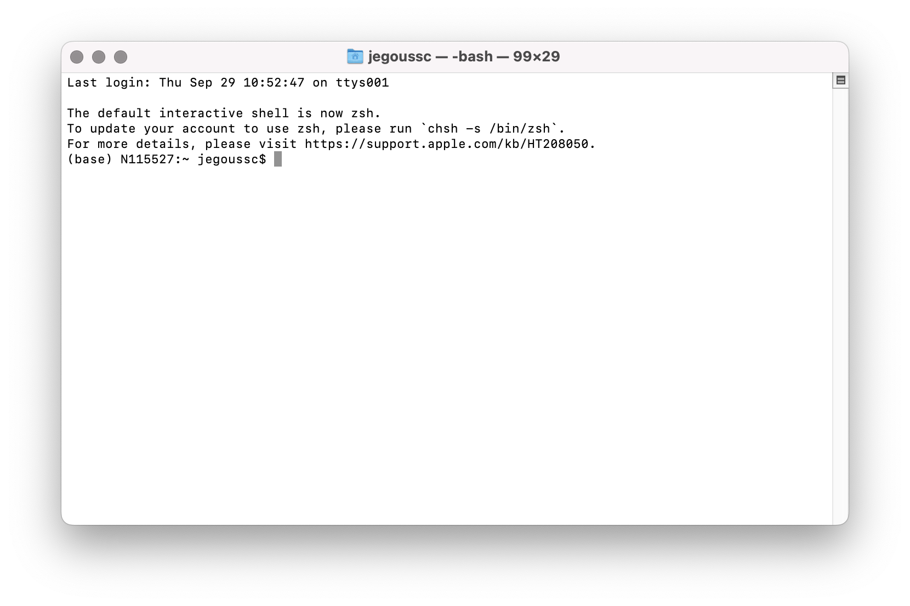
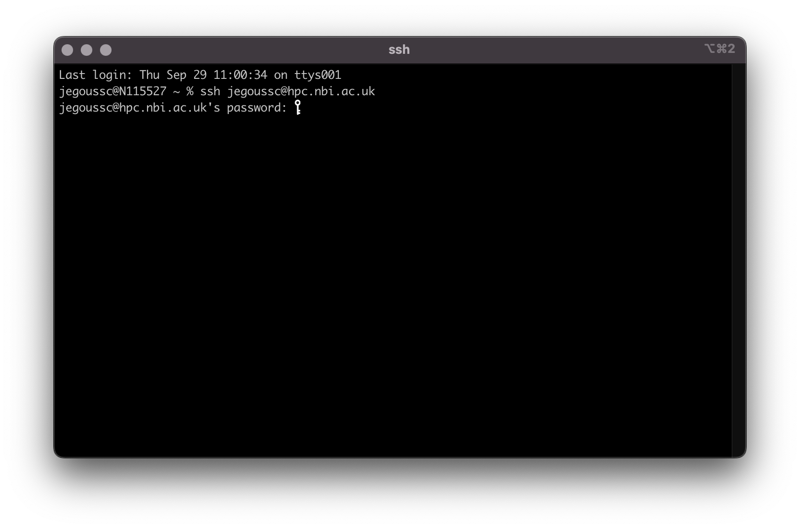
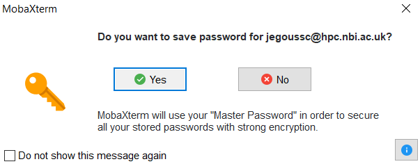

5 Writing Scripts and Working with Data
5.1 Writing files
We’ve been able to do a lot of work with files that already exist, but what if we want to write our own files? We’re not going to type in a FASTA file, but we’ll see as we go through other tutorials, there are a lot of reasons we’ll want to write a file, or edit an existing file.
To add text to files, we’re going to use a text editor called Nano. We’re going to create a file to take notes about what we’ve been doing with the data files in ~/shell_data/untrimmed_fastq.
This is good practice when working in bioinformatics. We can create a file called README.txt that describes the data files in the directory or documents how the files in that directory were generated. As the name suggests, it’s a file that we or others should read to understand the information in that directory.
Let’s change our working directory to ~/shell_data/untrimmed_fastq using cd, then run nano to create a file called README.txt:
$ cd ~/shell_data/untrimmed_fastq
$ nano README.txtYou should see something like this:

The text at the bottom of the screen shows the keyboard shortcuts for performing various tasks in nano. We will talk more about how to interpret this information soon.
When we say,
we really do mean nano is a text editor,text
: nano can only work with plain character data, not tables, images, or any other human-friendly media. We use nano in examples because it is one of the least complex text editors. However, because of this trait, nano may not be powerful enough or flexible enough for the work you need to do after this workshop. On Unix systems (such as Linux and Mac OS X), many programmers use Emacs or Vim (both of which require more time to learn), or a graphical editor such as Gedit. On Windows, you may wish to use Notepad++. Windows also has a built-in editor called notepad that can be run from the command line in the same way as nano for the purposes of this lesson.
No matter what editor you use, you will need to know the default location where it searches for files and where files are saved. If you start an editor from the shell, it will (probably) use your current working directory as its default location. If you use your computer’s start menu, the editor may want to save files in your desktop or documents directory instead. You can change this by navigating to another directory the first time you Save As…
Let’s type in a few lines of text. Describe what the files in this directory are or what you’ve been doing with them. Once we’re happy with our text, we can press Ctrl-O (press the Ctrl or Control key and, while holding it down, press the O key) to write our data to disk. You’ll be asked what file we want to save this to: press Return to accept the suggested default of README.txt.
Once our file is saved, we can use Ctrl-X to quit the nano editor and return to the shell.
The Control key is also called the Ctrl
key. There are various ways in which using the Control key may be described. For example, you may see an instruction to press the Ctrl key and, while holding it down, press the X key, described as any of:
Control-XControl+XCtrl-XCtrl+X^XC-x
In nano, along the bottom of the screen you’ll see ^G Get Help ^O WriteOut. This means that you can use Ctrl-G to get help and Ctrl-O to save your file.
Now you’ve written a file. You can take a look at it with less or cat, or open it up again and edit it with nano.
Open README.txt and add the date to the top of the file and save the file.
Use nano README.txt to open the file.
Add today’s date and then use Ctrl-X followed by y and Enter to save.
5.2 Writing scripts
A really powerful thing about the command line is that you can write scripts. Scripts let you save commands to run them and also lets you put multiple commands together. Though writing scripts may require an additional time investment initially, this can save you time as you run them repeatedly. Scripts can also address the challenge of reproducibility: if you need to repeat an analysis, you retain a record of your command history within the script.
One thing we will commonly want to do with sequencing results is pull out bad reads and write them to a file to see if we can figure out what’s going on with them. We’re going to look for reads with long sequences of N’s like we did before, but now we’re going to write a script, so we can run it each time we get new sequences, rather than type the code in by hand each time.
We’re going to create a new file to put this command in. We’ll call it bad-reads-script.sh. The sh isn’t required, but using that extension tells us that it’s a shell script.
$ nano bad-reads-script.shBad reads have a lot of N’s, so we’re going to look for NNNNNNNNNN with grep. We want the whole FASTQ record, so we’re also going to get the one line above the sequence and the two lines below. We also want to look in all the files that end with .fastq, so we’re going to use the * wildcard. We write the following line in our script using nano:
grep -B1 -A2 -h NNNNNNNNNN *.fastq | grep -v '^--' > scripted_bad_reads.txtWe introduced the -v option, now we are using -h to Suppress the prefixing of file names on output
according to the documentation shown by man grep.
Type your grep command into the file and save it as before. Be careful that you did not add the $ at the beginning of the line.
Quit nano by hitting Ctrl + x and y.
Now comes the neat part. We can run this script. Type:
$ bash bad-reads-script.shIt will look like nothing happened, but now if you look at scripted_bad_reads.txt, you can see that there are now reads in the file.
5.3 Making the script into a program
We had to type bash because we needed to tell the computer what program to use to run this script. Instead, we can turn this script into its own program. We need to tell the computer that this script is a program by making the script file executable. We can do this by changing the file permissions. We talked about permissions in Chapter 3.
First, let’s look at the current permissions.
$ ls -l bad-reads-script.sh
-rwx------ 1 [username] TSL_20 100 Aug 11 14:38 bad-reads-script.shWe see that it says -rwx------. This shows that the file can be read, modified and executed by you the file owner (you). We want to change these permissions so that the file can be executed as a program by anyone (groups and other users). We use the command chmod like we did earlier when we removed write permissions. Here we are adding (+) executable permissions (+x).
$ chmod +x bad-reads-script.shNow let’s look at the permissions again.
$ ls -l bad-reads-script.sh
-rwx--x--x 1 [username] TSL_20 100 Aug 11 14:38 bad-reads-script.shNow we see that it says -rwx–x--x. The x’s that are there now tell us we can run it as a program. So, let’s try it! We’ll need to put ./ at the beginning so the computer knows to look here in this directory for the program.
$ ./bad-reads-script.shThe script should run the same way as before, but now we’ve created our very own computer program!
You will learn more about writing scripts in a later lesson.
5.4 Moving and Downloading Data
So far, we’ve worked with data that is already on the remote server. Usually, however, most analyses begin with moving data onto your directories on a server. Below we’ll show you some commands to download data onto your instance, or to move data between your computer and the cloud.
The HPC is not connected to the internet for security reasons so you must log out of the HPC to download files on your own device. Then the files can be transferred to the HPC.
$ logout
Connection to hpc.nbi.ac.uk closed.5.4.1 Getting data from the cloud
There are two programs that will download data from a remote server to your local (or remote) machine: wget and curl. They were designed to do slightly different tasks by default, so you’ll need to give the programs somewhat different options to get the same behaviour, but they are mostly interchangeable.
wgetis short forworld wide web get
, and it’s basic function is to download web pages or data at a web address.curlis a pun, it is supposed to be read assee URL
, so its basic function is to display webpages or data at a web address.
Which one you need to use mostly depends on your operating system, as most computers will only have one or the other installed by default.
Let’s say you want to download some data from Ensembl. We’re going to download a very small tab-delimited file that just tells us what data is available on the Ensembl bacteria server. Before we can start our download, we need to know whether we’re using curl or wget.
To see which program you have, type:
$ which curl
$ which wgetwhich is a BASH program that looks through everything you have installed, and tells you what folder it is installed to. If it can’t find the program you asked for, it returns nothing, i.e. gives you no results.
On Mac OSX, you’ll likely get the following output:
$ which curl
/usr/bin/curl$ which wget
$This output means that you have curl installed, but not wget.
Once you know whether you have curl or wget, use one of the following commands to download the file:
$ cd MyDocuments # directory on your local machine
$ wget ftp://ftp.ensemblgenomes.org/pub/release-37/bacteria/species_EnsemblBacteria.txtor
$ cd MyDocuments
$ curl -O ftp://ftp.ensemblgenomes.org/pub/release-37/bacteria/species_EnsemblBacteria.txtSince we wanted to download the file rather than just view it, we used wget without any modifiers. With curl however, we had to use the -O flag, which simultaneously tells curl to download the page instead of showing it to us and specifies that it should save the file using the same name it had on the server: species_EnsemblBacteria.txt
It’s important to note that both curl and wget download to the computer that the command line belongs to. So, if you are logged into AWS on the command line and execute the curl command above in the AWS terminal, the file will be downloaded to your AWS machine, not your local one.
5.4.2 Moving files between your laptop and the server
It is possible to access the NBI server using the Windows navigation system. To do so, you must map the network drive:
- Access your computer (by clicking on the computer icon on your desktop) .
- Under the
Computer
tab, use the pull-down menuMap network drive
and selectMap network drive
. This will open a pop-up window asking what network drive you would like to map - Under
Folder
enter\\tsl-hpc-data\HPC-Homeand clickFinish
. - You now have access to HPC-Home through the Windows navigation system.


5.5 Summary
- Scripts are a collection of commands executed together.
- Transferring information to and from virtual and local computers.
6 Introducing the shell
6.1 What is a shell and why should I care?
A shell is a computer program that presents a command line interface which allows you to control your computer using commands entered with a keyboard instead of controlling graphical user interfaces (GUIs) with a mouse/keyboard/touchscreen combination.
There are many reasons to learn about the shell:
Many bioinformatics tools can only be used through a command line interface. Many more have features and parameter options which are not available in the GUI. BLAST is an example. Many of the advanced functions are only accessible to users who know how to use a shell.
The shell makes your work less boring. In bioinformatics you often need to repeat tasks with a large number of files. With the shell, you can automate those repetitive tasks and leave you free to do more exciting things.
The shell makes your work less error-prone. When humans do the same thing a hundred different times (or even ten times), they’re likely to make a mistake. Your computer can do the same thing a thousand times with no mistakes.
The shell makes your work more reproducible. When you carry out your work in the command-line (rather than a GUI), your computer keeps a record of every step that you’ve carried out, which you can use to re-do your work when you need to. It also gives you a way to communicate unambiguously what you’ve done, so that others can inspect or apply your process to new data.
Many bioinformatic tasks require large amounts of computing power and can’t realistically be run on your own machine. These tasks are best performed using remote computers or cloud computing, which can only be accessed through a shell.
In this lesson you will learn how to use the command line interface to move around in your file system.
6.2 How to access the shell
The Terminal is a window into which we will use to type commands in.
6.2.1 Windows
If you’re using Windows, you need to use a separate program to access the shell. You can use MobaXterm, a terminal for Windows, that is already installed on your machine.
- Click on the MobaXterm icon on your desktop.
- Select
Start local terminal


6.2.2 MacOS
On a Mac or Linux machine, you can access a shell through a program called Terminal
, which is already available on your computer.



6.3 How to access the remote server
To save time, we are going to be working on a remote server where all the necessary data and software available. When we say a remote sever
, we are talking about a computer that is not the one you are working on right now. You will access the remote server where everything is prepared for the lesson. We will learn the basics of the shell by manipulating some data files. Some of these files are very large , and would take time to download to your computer. We will also be using several bioinformatic packages in later lessons and installing all of the software would take up time even more time. A ready-to-go
sever let’s us focus on learning.

The remote server is a computer cluster used for high performance computing (HPC) for the Norwich BioScience Institutes (NBI). You can log into the remote server using the command ssh, your username and the address of the server hpc.nbi.ac.uk (make sure to replace [username] by your actual TSL username).
ssh [username]@hpc.nbi.ac.ukYou must then input your password.


MobaXterm will offer for you to save your password. It is up to you to do so.


After entering you password, you will be logged in the server and see the welcome message as seen in the screen capture below:


This welcome message provides a lot of information about the remote server that you’re logging into. We’re not going to use most of this information for our workshop, so you can clear your screen using the clear command.
Type the word clear into the terminal and press the Enter key.
This will scroll your screen down to give you a fresh screen and will make it easier to read. You haven’t lost any of the information on your screen. If you scroll up, you can see everything that has been output to your screen up until this point.
Hot-key combinations are shortcuts for performing common commands. The hot-key combination for clearing the console is Ctrl+L. Feel free to try it and see for yourself.
6.5 Summary
We now know how to move around our file system using the command line. This gives us an advantage over interacting with the file system through a GUI as it allows us to work on a remote server, carry out the same set of operations on a large number of files quickly, and opens up many opportunities for using bioinformatic software that is only available in command line versions.
In the next few episodes, we’ll be expanding on these skills and seeing how using the command line shell enables us to make our workflow more efficient and reproducible.
- The shell gives you the ability to work more efficiently by using keyboard commands rather than a GUI.
- Useful commands for navigating your file system include:
ls,pwd, andcd. - Most commands take options (flags) which begin with a
-. - Tab completion can reduce errors from mistyping and make work more efficient in the shell.